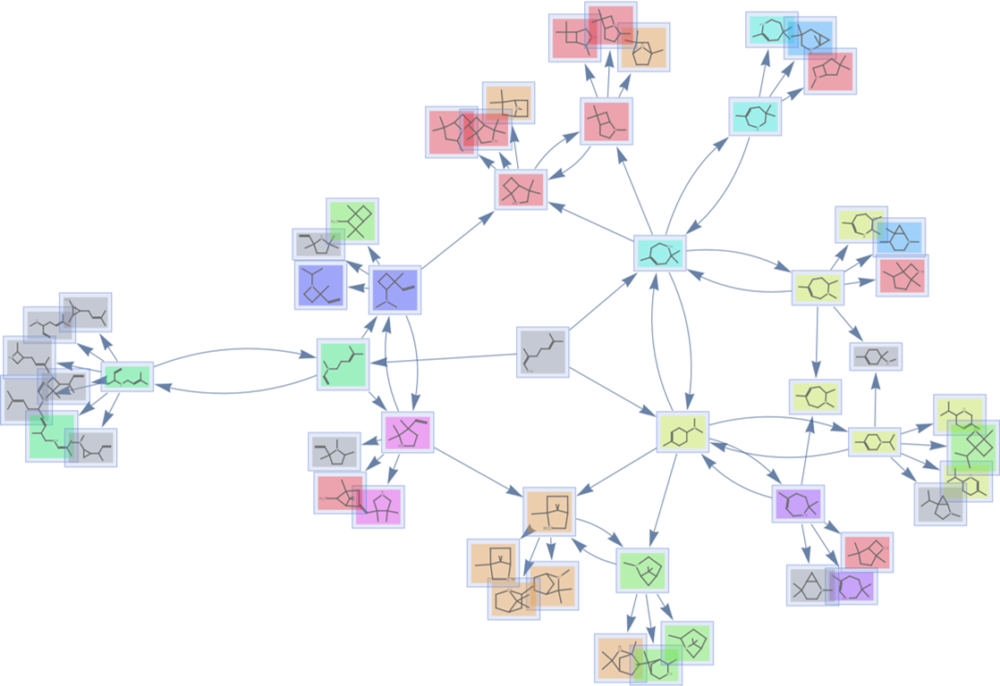

Analyzing Multiway Chemical Reaction Networks Using Chemical Space Networks
Overview
This project analyzes the relationship between the topological similarity of two isomers and the number of reactions required to go from one molecule to the other. I used various graph statistics to demonstrate the unique structures present within various chemical reaction networks.
Why I built this
This project was my headfirst introduction into serious programming in Mathematica. While I had done several small-scale coding projects in the language before, this 3-week nonstop programming experience greatly expanded my knowledge and skills in Mathematica. I chose this topic for my project because many of my previous small projects in Mathematica were graph theoretic, and I had previously done chemistry research, so a project about chemical reactions seemed very fitting.
Technical highlights
Challenge: Computational Explosion
Many of the most interesting chemical reaction networks grow rapidly as you increase the number of reaction steps. It was a significant task to both speed up the network generation step as well as find a system that did not grow too big too fast.
Challenge: Data Visualization
Many of the most interesting plots from this project involve 100s or 1000s of molecules, so finding a way to display all of the relevant information in an easy-to-understand visualize was a very rewarding task.

Results
The main conclusion of my project is that the topological similarity between two molecules is highly correlated with the number of reacitons required to reach a nearest common ancestor in the chemical reaction network. Additionally, my project produced a large number of useful functions and visualization tools that are available for others to use and expand upon.
What I'd do differently
I would spend more time early on building modular functionality so that I could perform more computational experiments more efficiently.